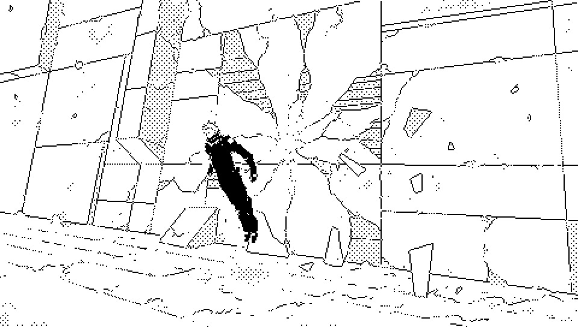

Neausea es un infirmitat qui manifest cum te sci posit relativ de se in tempor.
Ad qui es aflict, experient de Neausea apar prim quas te pot itiner per tempor. Sed impres de subject, de itiner per tempor, es sol atention qui mut trans seri alternativ posibil de events.
Ad qui es observator, un aflict apar cad subit. Cum corpor percut ter, vis mental de subject e itiner trans vias valid posibil de tempor, sed in process e perd fil de Tempor.In mod efectiv, il fi transform ex particip in mer test de curs de tempor.
Tumuls de cadavers fossil apud Paradichlorisse es testament de ils qui e spect Soies et e mor in process. Andes es sol person cognit qui e superviv congres cum Nohlxeserre.
To the afflicted, the experience of Neausea, would at first seems like one can travel through time. But the subject's impression of time-traveling is only their focus shifting across alternative possible sequences of events.
To an observer, an afflicted would appear to suddently collapse, by the time the body would hit the ground, the subject's mental gaze would have traveled across valid possible timelines, but would have in the process lost the track of Time. Effectively transforming, from a participant, into a mere witness of the course of time.
The hills of fossilized corpses by the sides of Paradichlorisse are a testament of the ones who have looked at the Soies and perished in the process. Andes is the only character known to have survived an encounter with Nohlxeserre.


incoming: from saharaphorest nohlxeserre